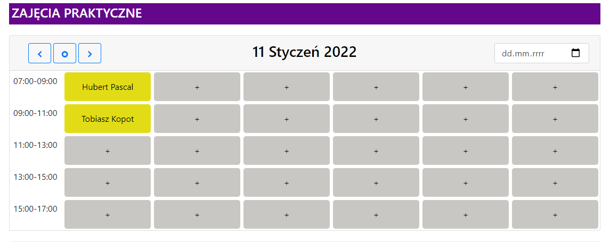
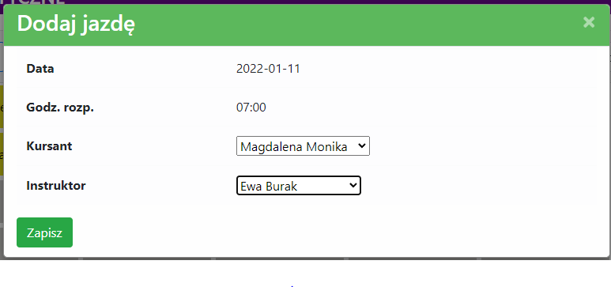
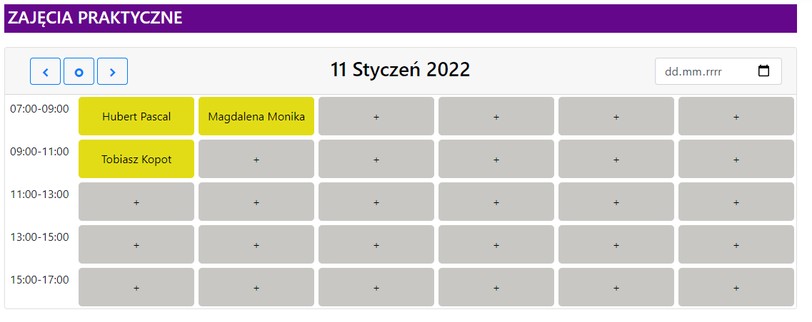

<div id="addPractical">
    <div class="row breadcrumb" style="width:90%; margin:20px auto 0rem auto;">
        <div class="col-sm-12 form-group" style="font-size: 25px; font-weight: bold; margin-bottom: 0rem;">
            DODANIE ZAJĘCIA PRAKTYCZNEGO
        </div>
    </div>

    <div class="breadcrumb" style="width:90%; margin: 30px auto 0 auto;">
        1. Wybrać sekcję "Harmonogram"
        
        <br />
        2. Wybrać wolne miejsce w harmonogramie.
        
        <br />
        3. Wygrać kursanta i instruktora.
        
        <br />
        4. Zajęcie zostało dodane.
        
    </div>
</div>

